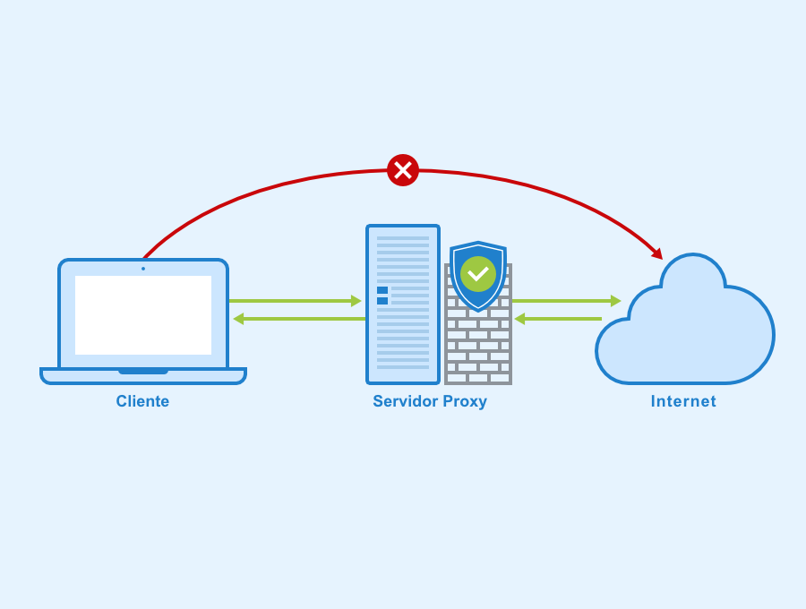
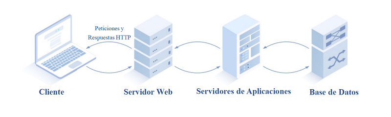

Aloja páginas web y las envía a los navegadores cuando los usuarios acceden a un sitio. Usa protocolos como HTTP y HTTPS. Ejemplos: Apache, Nginx, LiteSpeed.
6.2 Servidor de Archivos
Almacena y administra archivos para ser compartidos en una red. Permite acceso a documentos, imágenes y otros archivos. Protocolos: FTP, SMB, NFS.
6.3 Servidor de base de datos
Gestiona bases de datos para aplicaciones y sitios web.
Usa sistemas como MySQL, PostgreSQL, SQL Server, MongoDB.
Responde a consultas de datos de otras aplicaciones.
6.4 Servidor de Correo Electrónico
Gestiona el envío y recepción de correos electrónicos.
Protocolos: SMTP, IMAP, POP3. Ejemplos: Microsoft Exchange, Postfix, Zimbra.
6.5 Servidor DNS
Traduce nombres de dominio (por ejemplo, google.com) en direcciones IP. Sin DNS, los usuarios tendrían que recordar números en lugar de nombres.
Ejemplos: BIND, PowerDNS, Microsoft DNS Server.
6.6 Servidor proxy
Actúa como intermediario entre el usuario e internet. Puede filtrar contenido, mejorar seguridad o acelerar conexiones.
Tipos: Directo, Inverso, Transparente.

6.7 Servidor Virtual Privado (VPS)
Es un servidor dividido en varias máquinas virtuales independientes. Es más económico que un servidor dedicado, pero ofrece más control que el hosting compartido.
Ejemplos: DigitalOcean, Linode, Vultr.
6.8 Servidor Dedicado
Un servidor físico exclusivo para un usuario o empresa. Ofrece máximo rendimiento y personalización. Es más costoso, pero ideal para sitios con mucho tráfico.
6.9 Servidor de aplicaciones
Aloja y ejecuta aplicaciones en red. Ejemplos: Tomcat (Java), Node.js, JBoss. Sirve como middleware entre la base de datos y el usuario.

6.10 Servidor de Respaldo
Almacena copias de seguridad de datos y sistemas. Protege contra la pérdida de información.
Ejemplos: Veeam, Acronis, Bacula.